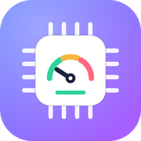
Keep a gaming laptop under 100 °C
A guided, reversible ThrottleStop tuning for the Lenovo Legion 83DE (Intel Core i9-14900HX) — plus an app that applies it, keeps it running, and tells you when a Windows update has undone it.
Quick startSee the appWhat this project does
It cuts the CPU's heat by lowering voltage (undervolt), capping boost clocks and limiting power, then makes sure that tuning is applied at every logon and stays applied. The result on the reference laptop, in CS2:
Measured with HWiNFO shared memory, one sample every 2 seconds; the “before” figures are maxima from screenshots, not a controlled A/B test. FPS was not measured — the game felt as smooth as before. Details in RESULTS.md.
The problem it solves
Gaming laptops with a 14900HX are built to boost hard, then run out of cooling. The symptoms are familiar:
- Stutter that grows with session length. The CPU reaches 100 °C, throttles, and frame times spike — in CS2 and in every other game.
- The fix is scattered across forums. Undervolt values, boost-ratio bytes, power-limit encodings and hidden checkboxes are copied between threads, rarely explained, and often wrong for your chip. One of them (“Disable Controls”) silently blocked every power limit we set for hours.
- It does not survive. ThrottleStop is not a service: close it, reboot without starting it, or take a Windows update, and the laptop quietly returns to stock heat. Windows updates can switch virtualization-based security back on, which locks the voltage controls altogether.
- It is easy to go too far. Aggressive undervolts on 13th/14th-gen chips cause silent errors or long-term degradation. Without a baseline, backups and a way to check, you cannot tell.
How this project helps
Guided and reversible
A step-by-step wizard backs up your settings first, explains each change, and has a one-click rollback.
Always on
A logon task plus a 5-minute watchdog starts ThrottleStop and keeps it running — never a second copy.
“My PC” health check
Open the app after a Windows update: it compares the settings, the task, VBS and the Windows build with when you set it up, and a Fix it button re-applies only what drifted.
Safe by default
It refuses to run on a CPU other than the i9-14900HX, tests every claim against the real machine, and records what went wrong so you do not repeat it.
Quick start
Windows 11 on a Lenovo Legion 83DE with an i9-14900HX. Other systems are not supported yet.
- Get ThrottleStop. Download it (tested with 9.7.3) from TechPowerUp and leave the
.zipinDownloads. - Get this repo (clone or download the ZIP).
- Run the installer: double-click
install.cmd(asks for administrator rights) or open the app withapp\Launch-Wizard.cmdand follow the wizard. - Choose about VBS. Answer yes to turn it off (needed for the undervolt; breaks WSL2/Docker until you restore it with
scripts\maintenance\restore_vbs.ps1). - Reboot. ThrottleStop now starts at every logon with the tuning applied.
- Check. Open the app: My PC should say “Your PC is optimized”. Run
scripts\Create-Shortcut.ps1for a desktop and Start Menu shortcut with the app icon.
install.cmd -DisableVBS # no prompt
install.cmd -InstallDir "D:\ThrottleStop" -SkipVBS
powershell -File scripts\Create-Shortcut.ps1App walkthrough
Screenshots come from the app's demo mode (sample data; nothing on the PC is touched) and are regenerated with tools\make-shots.ps1.
My PC — the health check
This is the home screen once the tuning is set up. Run it any time, for example after a Windows update.
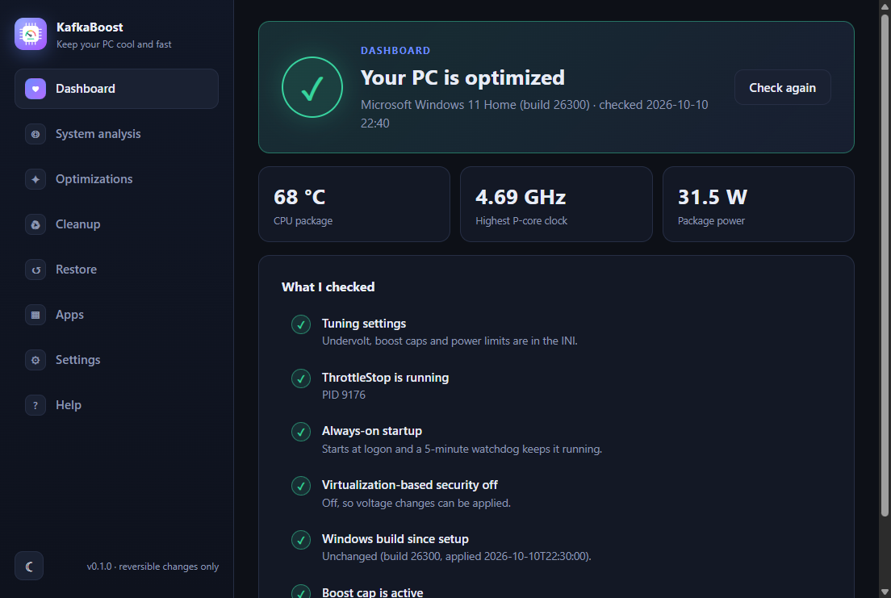
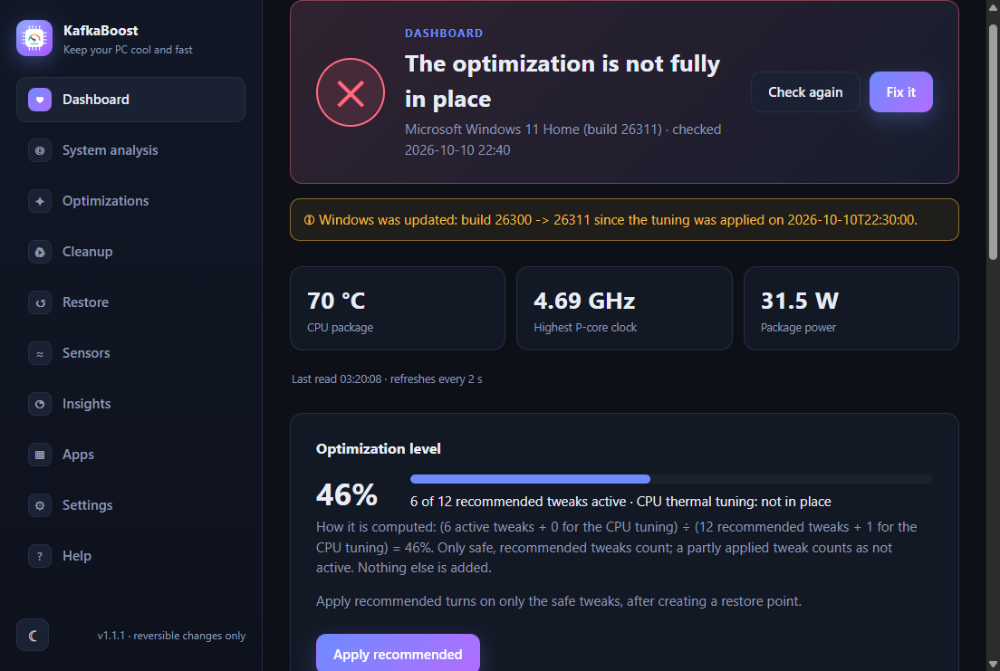
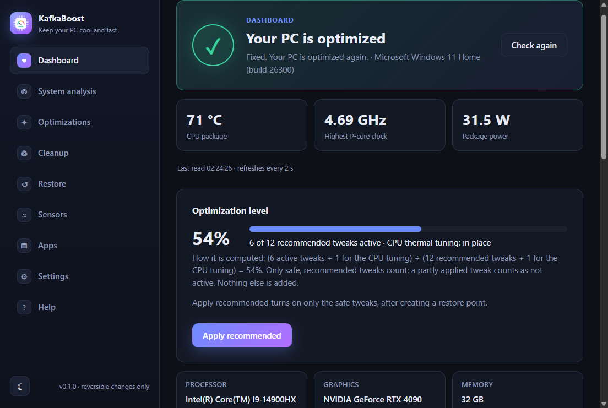
Setup wizard — step 0 to the last step
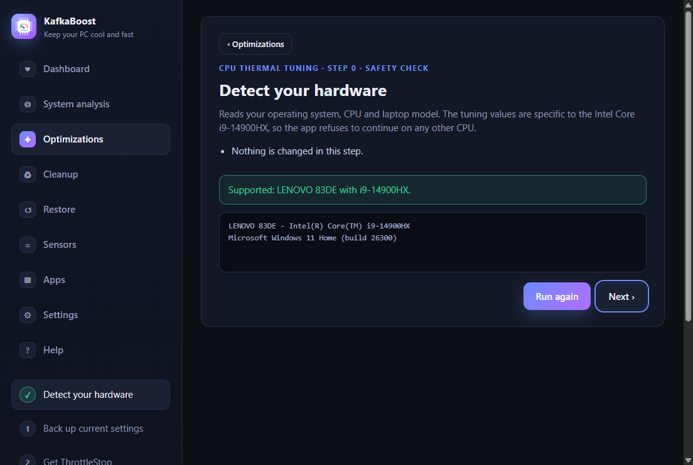
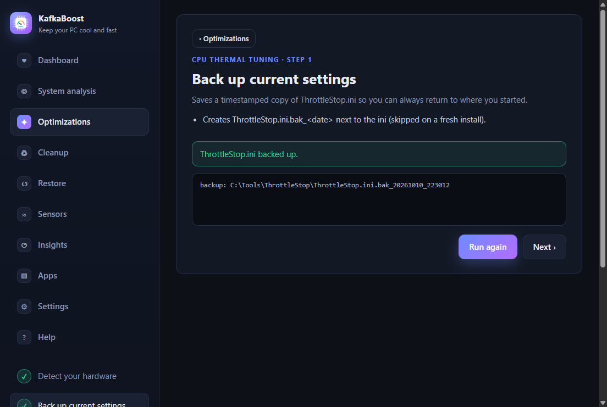
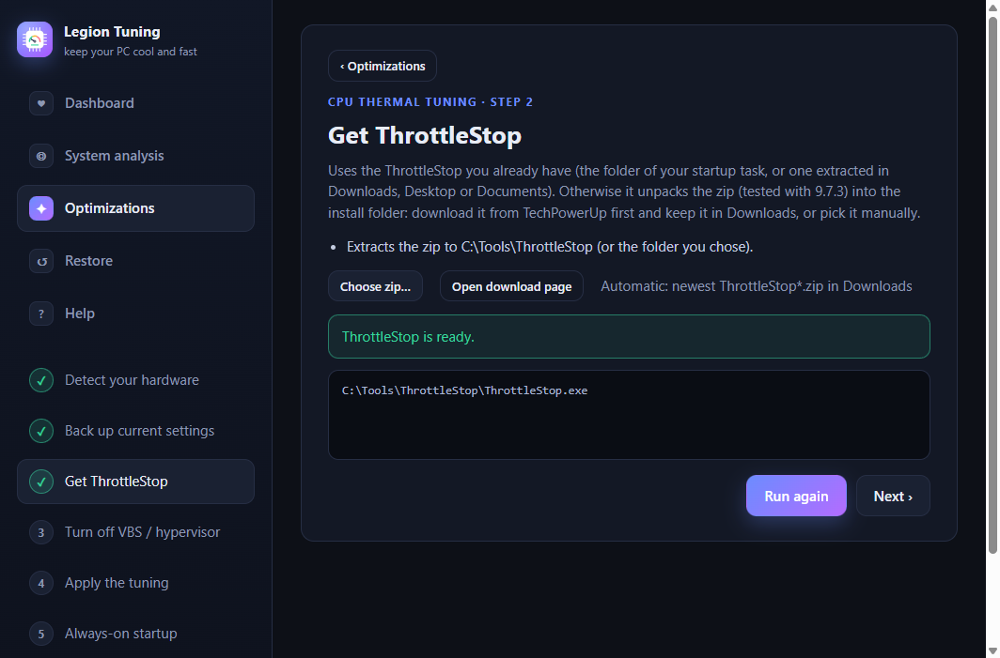
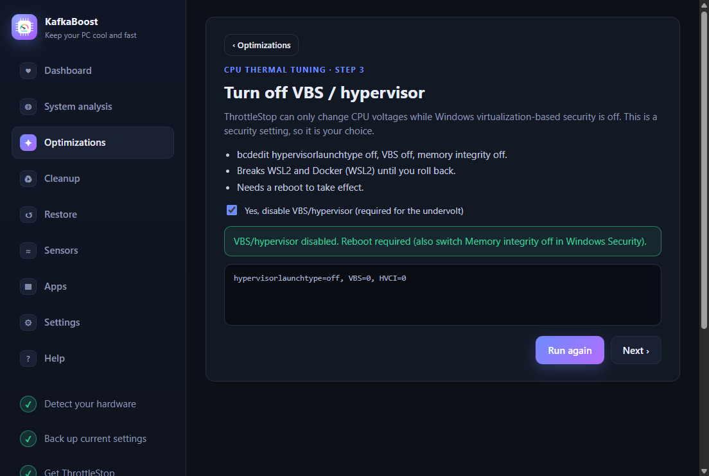
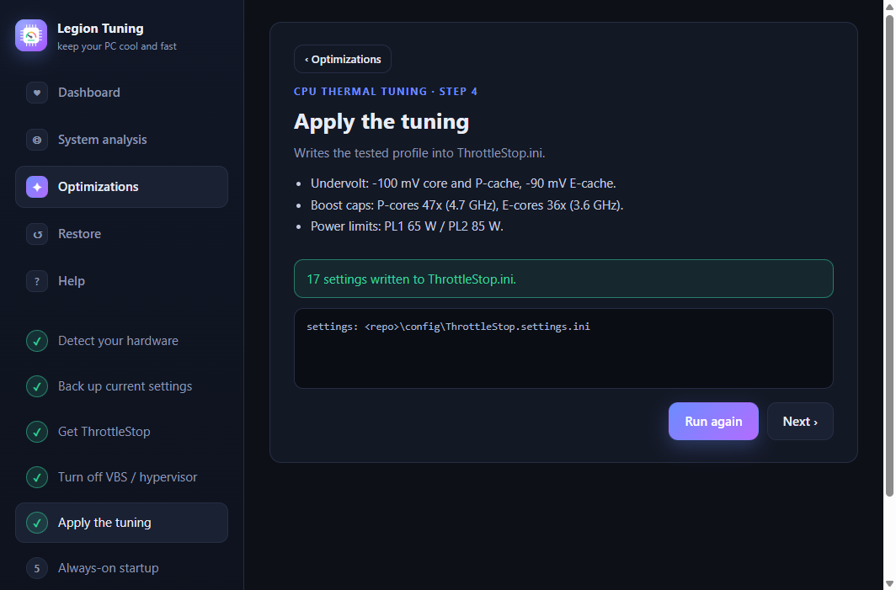
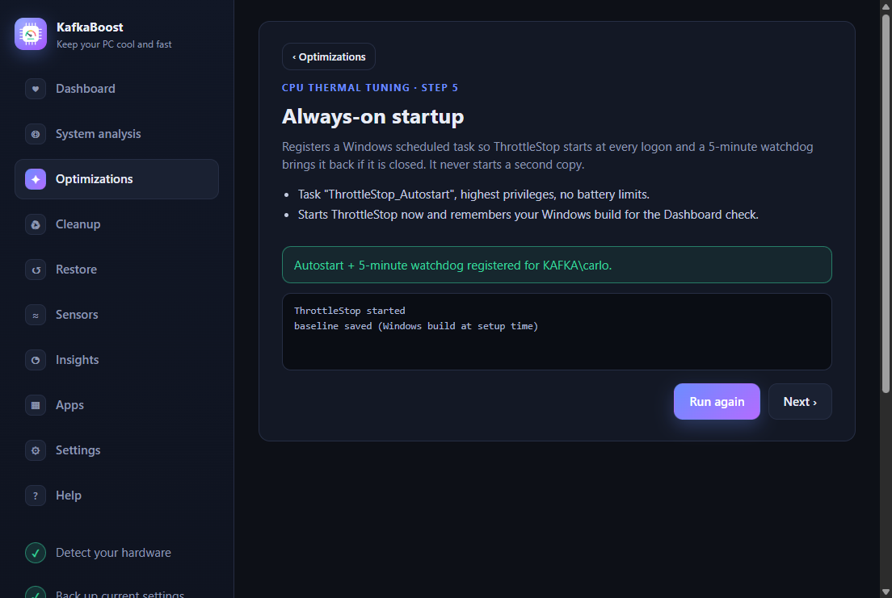
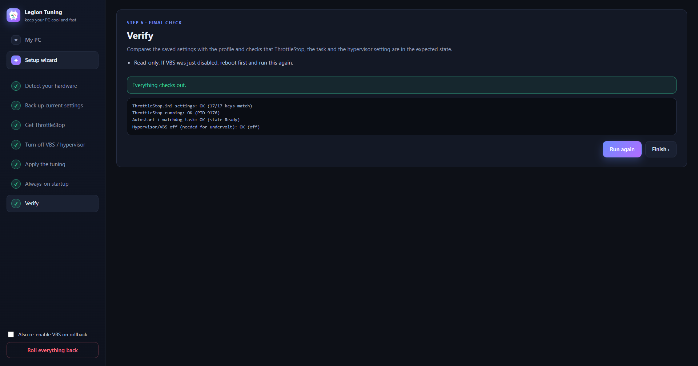
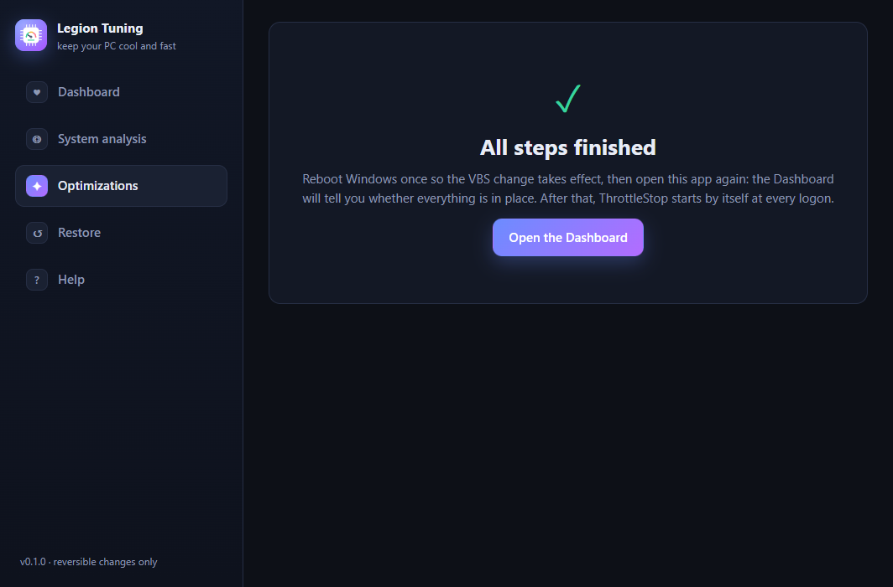
What gets applied
Profile 0 of ThrottleStop, from config/ThrottleStop.settings.ini (17 keys):
| Setting | Value | Why |
|---|---|---|
| Core / P-cache undervolt | −100 mV / −100 mV | Less voltage, less heat at the same clock. |
| E-cache undervolt | −90 mV | Same, for the efficiency cores. |
| V/F point 1 (800 MHz) | +100 mV | “mV Boost”: keeps idle stable with an undervolt. |
| P-core turbo cap | 47x (4.7 GHz) | The main heat lever; was 54x. |
| E-core turbo cap | 36x (3.6 GHz) | Was 41x. |
| PL1 / PL2 | 65 W / 85 W | Lenovo's limits were 80/119 W (static 140/190 W). |
| IccMax (core) | 511.75 A (max) | Stability, as recommended by the ThrottleStop author. |
Every key, the voltage encoding and the community comparison are in CONFIGURATION.md.
Troubleshooting
The temperature is back to 100 °C
Open My PC. Typical causes: ThrottleStop is not running, a Windows update turned VBS back on or reset the settings. Fix it handles the first two; VBS needs your consent.
Power limits do not apply
In ThrottleStop's TPL window the Disable Controls box must be unchecked. HWiNFO's “PL1/PL2 (Static)” rows keep showing the stock values; look for the “Power Limit Exceeded” flags instead.
Windows “Internal parity error” (WHEA 19)
A corrected CPU error is a warning that the undervolt is too deep for this chip. Do not go deeper; if it returns, use −80/−80/−70 mV.
HWiNFO shows an error dialog
Never start the free HWiNFO64.exe with command-line arguments; set SensorsOnly=1 and SensorsSM=1 in HWiNFO64.INI instead.
WSL2 / Docker stopped working
That is the price of turning VBS off. Run scripts\maintenance\restore_vbs.ps1 and reboot (the undervolt stops working while VBS is on; the boost and power caps may still apply).
More, including the test protocol and stop conditions: TROUBLESHOOTING.md.
Roadmap
Ideas, not promises. None of this exists yet.
- Presets with a recommendation score. Named tunings per CPU family (the current one is the “Default preset” for this laptop), each with requirements, risk and source. The app would score every preset against the detected CPU, cooling and a short baseline measurement, and recommend the best fit. Presets that were not validated on real hardware would be labelled as such.
- Guided test session. The app starts a sensor logger while you play, then shows peak temperature, power, throttling and WHEA errors before vs after a change.
- Windows installer package (
npm run distis configured, not built) and a fresh-Windows test. - Linux backend for power limits and boost caps. Undervolting is often locked on 13th/14th-gen chips; macOS has no equivalent.
Documentation
| Document | What is in it |
|---|---|
| README.md | Overview, quick start, limitations, repository layout. |
| AGENTS.md | Current state, rules and the repo map for anyone (human or AI) changing it. |
| getting-started.md | Step-by-step onboarding. |
| ARCHITECTURE.md | How the app, the step runner and the PowerShell library fit together. |
| CONFIGURATION.md | ThrottleStop.ini keys, the voltage encoding, community comparison. |
| TESTING.md | Unit tests, UI screenshots, the safe way to test a tuning change. |
| TROUBLESHOOTING.md | Lessons learned, stop conditions, rollback. |
| RESULTS.md | Measurements and the reference machine. |